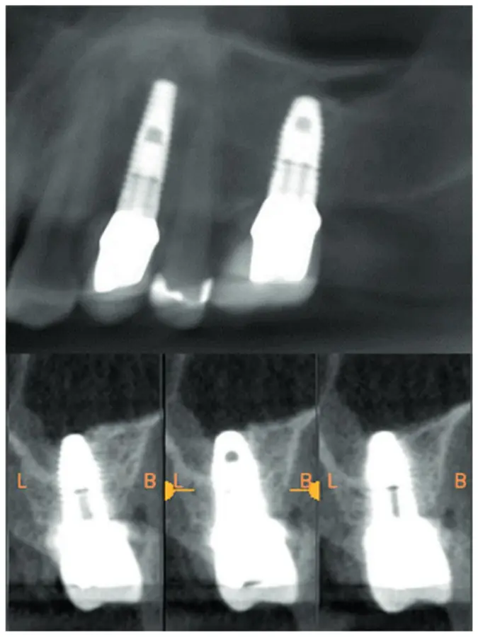
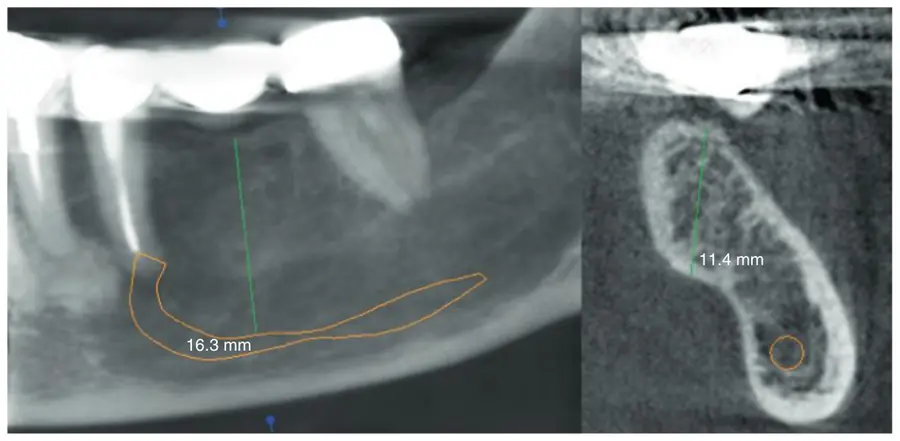

نسخه استخراجشده؛ ترجمه یا تأیید علمی انجام نشده است. وضعیت: captured
دو پیشرفت، دندانپزشکی مدرن را دگرگون کردند: «پیدایش و پالایش پیوستهی پروتزهای متکی بر ایمپلنت» و «کاربرد گستردهی تصویربرداری سهبعدی CT». و رادیولوژی نقشی حیاتی در هر سه فاز دارد: طرحریزی، جایگذاری، و پیگیری بلندمدت.

و قاعدهی حاکم بر انتخاب: «تجویز رادیوگرافی باید با معاینهی بالینی کامل هدایت شود و مطالعهی پیشنهادی باید سود تشخیصی را بیشینه و خطر پرتو و هزینه را کمینه کند.»
مزیتها: «در دسترس بودن آسان، تفکیک بالا، اعوجاج کمینه، کمترین بهای مالی و پرتوگیری.» و در سامانههای جامد دیجیتال، «امکان تولید آنی تصویر».
و محدودیتها: «پوشش آناتومیک محدود، ناتوانی در ارزیابی بُعد باکولینگوال، کشیدگی و کوتاهشدگی، سوپرایمپوزیشن آناتومیک، دشواری بازتولید هندسهی پروجکشن، محدودیت بهدلیل همکاری بیمار و آناتومی.»
و توصیهاش: ارزیابی اولیهی یک فضای بیدندان تکی یا فاصلهی کوتاه، تصویربرداری حین عمل، و نخستین رادیوگرافی پس از عمل و تصاویر پیگیری.
و یک نکتهی تاریخی دربارهی اکلوزال: «در گذشته، رادیوگرافی اکلوزال برای ارزیابی پایهی کانتور باکولینگوال مندیبل به کار میرفت. ولی قاعدهی تنهی مندیبل معمولاً بُعد باکولینگوالی پهنتر از زائدهی آلوئولار دارد، که به برآورد بیش از حد پهنای استخوان میانجامد.» و در ماگزیلا: «محدودیتهای آناتومیک، اکلوزال را در ارزیابی نواحی بیدندان بیاثر میکنند.»
مزیتها: «در دسترس بودن آسان، پوشش آناتومیک گسترده، بهای مالی و پرتوگیری پایین.» و چه چیزی نشان میدهد؟ «نمای کلی درشتی از ساختارهای استخوانی هر دو فک، شامل کف سینوسهای ماگزیلاری و کانالهای آلوئولار تحتانی» — ملاحظات ساختاری مهم در جایگذاری خلفی.
و محدودیتها با جزئیات عددی: «اعوجاج تصویر، سوپرایمپوزیشن و تصاویر شبح، تفکیک پایینتر، ناتوانی در ارزیابی بُعد باکولینگوال، حساسیت به تکنیک.» و درجهی اعوجاج «پیشبینیناپذیر» است: ساختارهای باکال فوکال تراف افقی باریک و ساختارهای لینگوال افقی بزرگشده دیده میشوند. «این اعوجاج نایکنواخت، اندازهگیری دقیق مزیودیستالی ریج را ناممکن میکند و با نرمافزار قابل تصحیح نیست.»
و یک عدد کلیدی: «بزرگنمایی عمودی تقریباً ۱۵ تا ۳۰ درصد» وجود دارد، و «زاویهی اندکی منفی عمودی پرتو، تصاویر ساختارهای لینگوالی را بالاتر پروجکت میکند».
MDCT: «بهای بالاتر، دوز پرتو بزرگتر، و دسترسی محدود دندانپزشکان، پذیرش گستردهاش را برای طرحریزی ایمپلنت محدود کرده است.»
و CBCT — مزیتها: «میدان دید متغیر از یک ناحیهی بیدندان تا کل فکها، تصویربرداری مقطعی سهبعدی بدون سوپرایمپوزیشن، دقت ابعادی، دسترسی روزافزون، و شبیهسازی جراحی ایمپلنت با نرمافزار تخصصی.»
و محدودیتهای CBCT: «بهای مالی و پرتوگیری متوسط، حساسیت به آرتیفکت سختشدگی پرتو، حساسیت به تکنیک، بهویژه به حرکت بیمار، نیاز به آموزش ویژه برای تفسیر، کالیبره نبودن برای اندازهگیری چگالی استخوان، و کنتراست ضعیف بافت نرم.»
و توصیههای CBCT: «پس از معاینهی اولیه، برای ارزیابی رادیولوژیک کامل، پیش و پس از افزایش استخوان، پس از عمل برای ایمپلنتهای علامتدار (تحرک ایمپلنت، تغییر حس، ایمپلنت جابهجاشده)، و نامناسب برای تصویربرداری دورهای بدون علامت.»
و روشهای کنار گذاشتهشده: «لترال ابلیک، سفالومتریک لترال، و توموگرافی معمول عمدتاً با CBCT جایگزین شدهاند.» و دربارهی MRI: «هرچند تصاویر مقطعی فک بدون پرتو یونساز میسازد، نمایش ساختارهای بافت سخت آن برای طرحریزی ایمپلنت ناکافی است.»
آکادمی آمریکایی رادیولوژی دهان و فک و صورت، یازده توصیهی صریح برای تصویربرداری بیمار ایمپلنت دارد. اینها ستون فقرات تصمیمگیریاند:

و الگوی پنهان در این یازده توصیه را ببین: پانورامیک و پریاپیکال برای شروع، CBCT برای برنامهریزی مقطعی و شرایط پیچیده، و پریاپیکال برای پیگیری بدون علامت. CBCT نه نقطهی شروع است و نه ابزار پیگیری روتین.
و دو «نکن» صریح که باید حفظ شوند: CBCT بهعنوان معاینهی اولیه (توصیهی ۳) و CBCT برای بازبینی دورهای بدون علامت (توصیهی ۱۰).